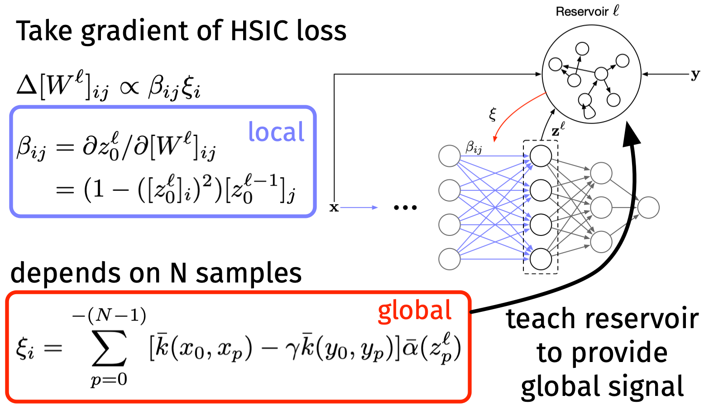

Poster at SNUFA '21
I presented my work on a biologically plausible learning rule as a poster at the Spiking Neural networks as Universal Function Approximators (SNUFA '21). There were many great talks and posters presented, but I was most excited by the presentations on spiking neural networks (SNNs) being applied to solve real problems:
- the European Space Agency is looking at SNNs to solve graph problems (first time I've seen a graph neural network (GNN) equivalent for spikes!)
- StereoSpike uses two event-based cameras with a U-Net architecture to perceive depth. This work was especially cool for me, because I briefly looked at stereoscopic perception using conventional computer vision algorithms at the start of my Ph.D. We were trying to build a bitstream computing circuit as a stepping stone to SNNs, so it's cool to see someone find a solution to the problem years later.
Our work
I presented our work on learning in biological networks by optimizing the information bottleneck. The success of deep learning has emphasized the importance of depth when training networks to solve complex problems. Depth isn't an issue for artificial neural networks (ANNs), because back-propagation provides a systematic way to assigning credit regardless of depth. Currently, there is not an accepted, biologically plausible back-propagation equivalent for SNNs, though we can use surrogate gradients when the plausibility constraint is removed.
Our work took inspiration from HSIC training for ANNs. Instead of computing a loss at the very end of the network, then propagating the loss backwards, HSIC training optimizes each layer independently. Every layer is updated to minimize
$$ cal(L)_"HSIC" = upright(HSIC)(vecb(z)^ell, vecb(x)) - gamma upright(HSIC)(vecb(z)^ell, vecb(y)) $$
where $vecb(z)^ell$ is the output of the layer $ell$, and $vecb(x)$/$vecb(y)$ are the input/output of the entire network, respectively. We show the gradient descent update for this objective can be decomposed into two components—a local Hebbian component and a layer-wise global modulatory signal.
One challenge to applying this rule for SNNs directly is that the HSIC is computed over a batch of samples, but biological networks see samples sequentially, one-at-a-time. To overcome this, we encode a batch as a window of samples over time (i.e. a batch size of $N$ corresponds to the last $N$ samples presented to the network). We show that the local component depends only on the current sample, and the global component depends on the prior samples. Then, we propose using an auxiliary reservoir network to compute the global component as shown below.

Our learning rule is a three-factor Hebbian rule. It contains a local component that depends on the current sample, and a global component that depends on past samples. A reservoir is used to compute the global component.
Note that the reservoir can be trained a priori using random data, and it does not need to be trained during the main learning task (though it can be). Check out our poster or preprint for more details!